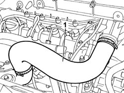
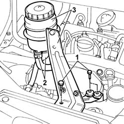
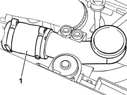
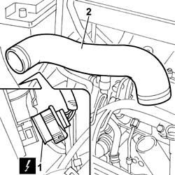
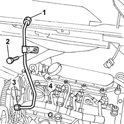
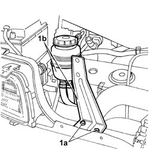
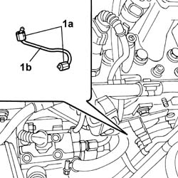
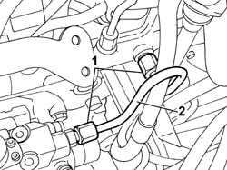

1060F20 PRESSURE PUMP/MANIFOLD PIPE - R R
- Path
- Procedures > 10 ENGINE UNIT > 1060 DIESEL INJECTION SYSTEM > 1060F INJECTORS AND LINES > 1060F20 PRESSURE PUMP/MANIFOLD PIPE - R R
- Kind
- repair procedure (removal / refitting; the operation number is the code)
- Applies to
- engines: 2.0 JTD 8V, 2.3 JTD 16V, 2.8 JTD 8V; all production periods
- Interactive page
- https://sloeber94.github.io/elrnDB-fDct/en/#/244000837
Applies to: engines: 2.3 JTD 16V; all production periods
 Removing
Removing
 Refitting
Refitting- Position the vehicle on the lift.
1. Remove the air supply hose to the air/air heat exchanger (intercooler).

Applies to: engines: 2.3 JTD 16V; all production periods
1. Undo the bolts fixing the power assisted steering fluid reservoir mounting bracket.
2. Disconnect the fluid pipes from the reservoir.
3. Remove the power assisted steering fluid reservoir complete with bracket.

Applies to: engines: 2.3 JTD 16V; all production periods
1. Remove the second section of the air supply hose to the air/air heat exchanger (intercooler).

Applies to: engines: 2.3 JTD 16V; all production periods
1. Disconnect the electrical connection for the right front light cluster.
 | Description | Connector |
|---|---|---|
. | Right headlamp | F011 |
2. Disconnect the bands at the two ends and remove the air pipe from the air/air heat exchager to the intake manifold.

Applies to: engines: 2.3 JTD 16V; all production periods
1. Undo the connector for the pipe from the return manifold.
2. Undo the bolt fixing the pipe to the mounting bracket.
3. Undo the connector for the pipe from the pressure pump.
4. Remove the pipe from the pressure pump to the fuel manifold.

Applies to: engines: 2.3 JTD 16V; all production periods
Refitting
Removing- Fit the new pipe from the pressure pump to the fuel manifold.
- Tighten the connectors on the pressure pump and the return manifold to torque.
 | Value - daNm | Fastening | Component | Ø |
|---|---|---|---|---|
. | 2.3 | Connector | PRESSURE PUMP LINE TO FUEL MANIFOLD | M14X1.5 |
| Value - daNm | Fastening | Component | Ø |
|---|---|---|---|---|
. | 2.3 | Connector | PRESSURE PUMP LINE TO FUEL MANIFOLD | M12X1.5 |
- Fit the air pipe from the air/air heat exchanger to the intake manifold.
- Connect the electrical connection for the right front light cluster.
| Description | Connector |
|---|---|---|
. | Right headlamp | F011 |
- Fit the second section of the air supply hose to the air/air heat exchanger (intercooler).
- Fit the power assisted steering fluid reservoir complete with bracket.
- Connect the fluid pipes to the reservoir.
- Tighten the bolts fixing the power assisted steering fluid reservoir mounting bracket.
- Fit the air supply hose to the air/air heat exchanger (intercooler).
- Remove the vehicle from the lift.
Applies to: engines: 2.8 JTD 8V; all production periods
Removing
RefittingSee in Op. 1048B22
See in Op. 1048B14
- Undo the fixing bolts (1a) and move the power assisted steering fluid reservoir assembly and mounting bracket outside of the work area.

Applies to: engines: 2.8 JTD 8V; all production periods
1. Undo the connectors (1a) and remove the fuel pipe (1b).

Applies to: engines: 2.8 JTD 8V; all production periods
Refitting
Removing- Fit the fuel pipe in place.
- Tighten the connectors checking the torque.
| Value - daNm | Fastening | Component | Ø |
|---|---|---|---|---|
. | (Fuel manifold end) 2.6 - 3.2 | Connector | PRESSURE PUMP LINE TO FUEL MANIFOLD | M14 |
| Value - daNm | Fastening | Component | Ø |
|---|---|---|---|---|
. | (Pressure pump end) 1.9 - 2.3 | Connector | PRESSURE PUMP LINE TO FUEL MANIFOLD | M12 |
- Position the power assisted steering fluid reservoir and mounting bracket and tighten the fixing bolts.
See in Op. 1048B14
See in Op. 1048B22
Applies to: engines: 2.0 JTD 8V; all production periods
Removing
Refitting1. Undo the connector for the pipe from the return manifold and the connector for the pipe from the pressure pump.
2. Remove the pipe from the pressure pump to the fuel manifold.

Applies to: engines: 2.0 JTD 8V; all production periods
Refitting
Removing- Fit the new pipe from the pressure pump to the fuel manifold.
- Tighten the connectors on the pressure pump and on the return manifold to torque.
| Value - daNm | Fastening | Component | Ø |
|---|---|---|---|---|
. | 2 | Connector | PRESSURE PUMP LINE TO FUEL MANIFOLD | - |